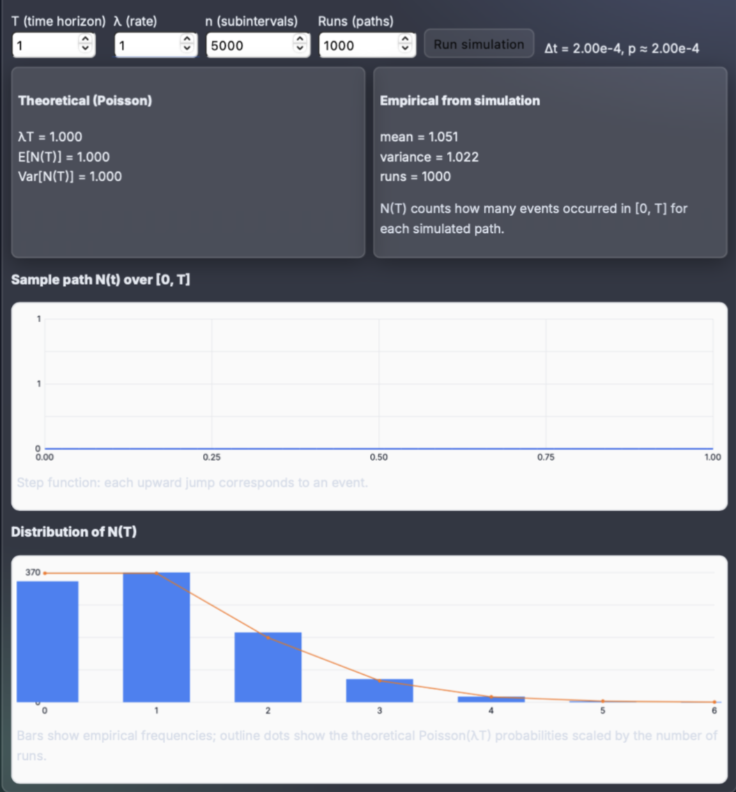
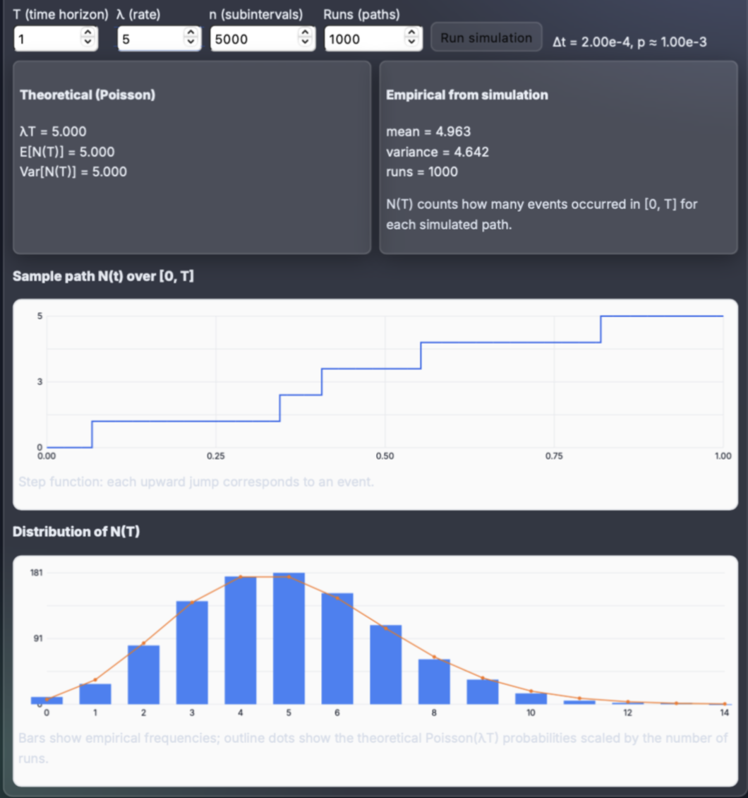
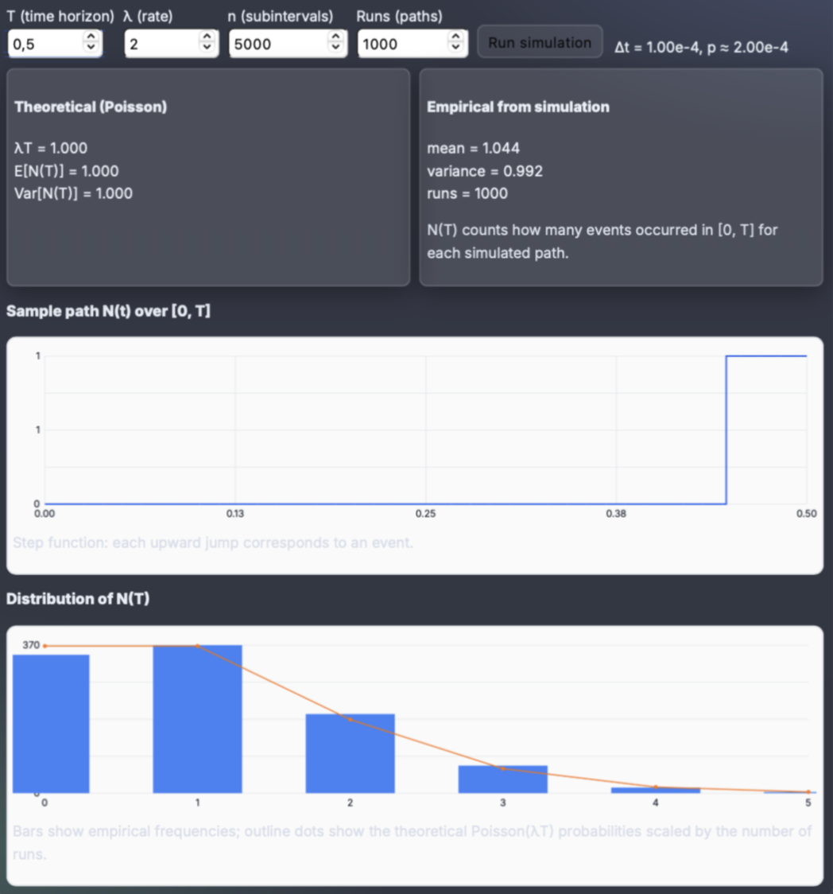
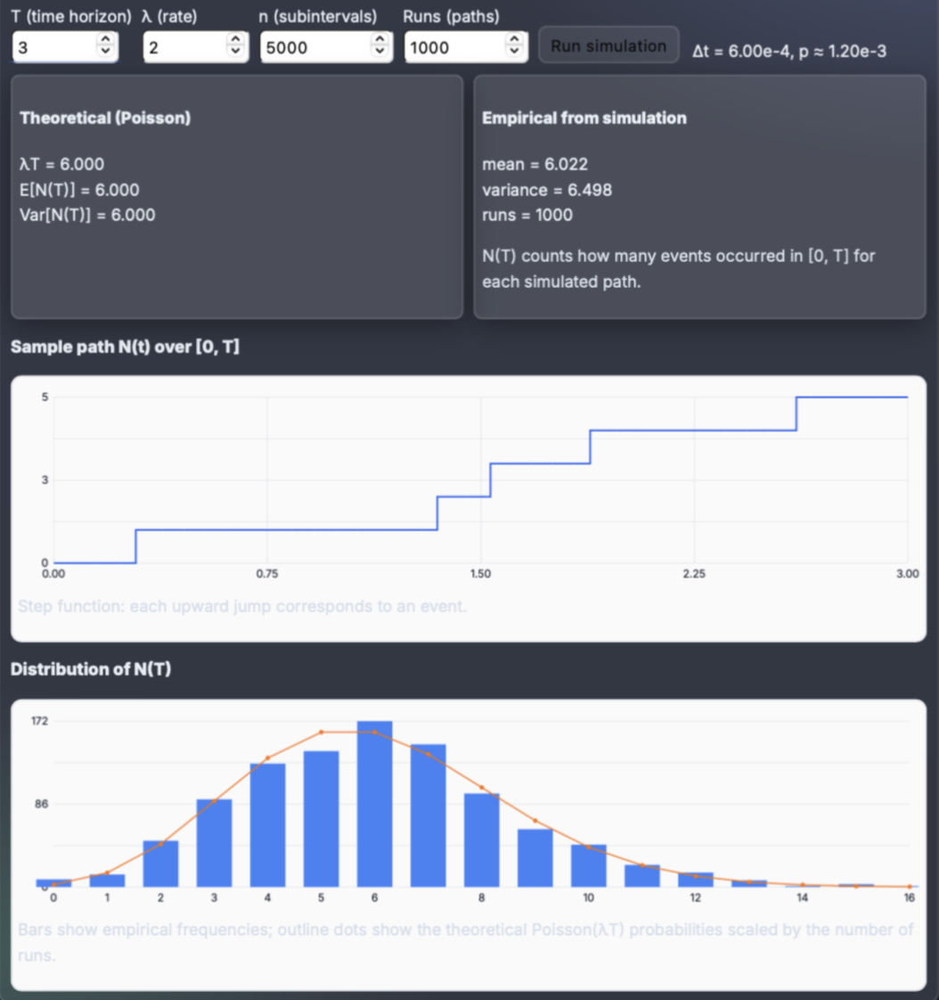
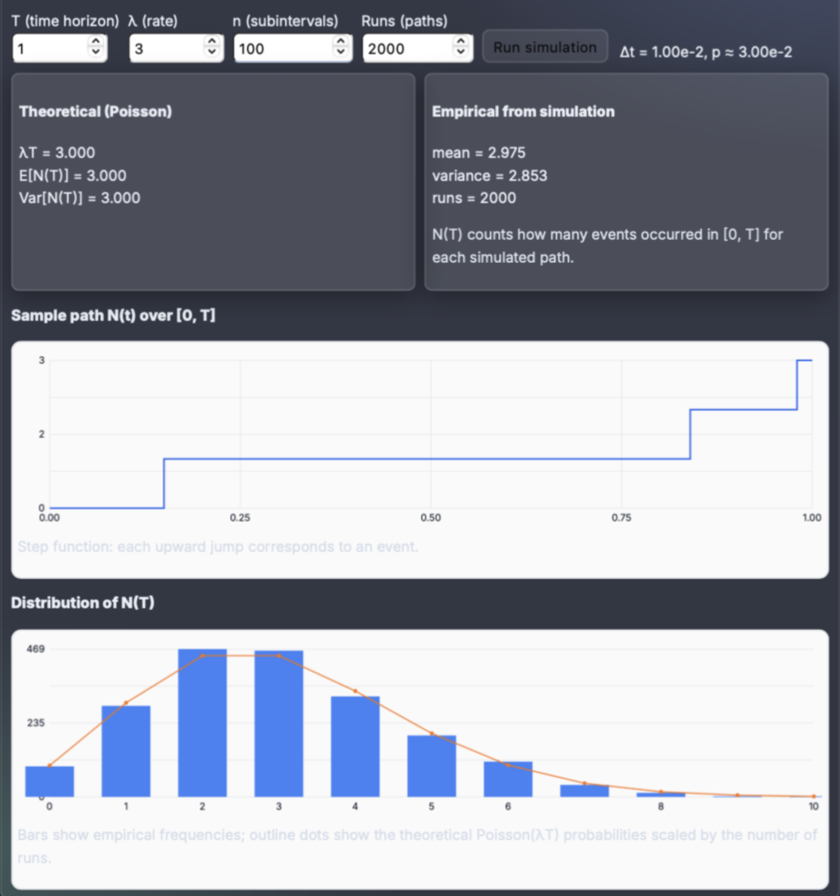
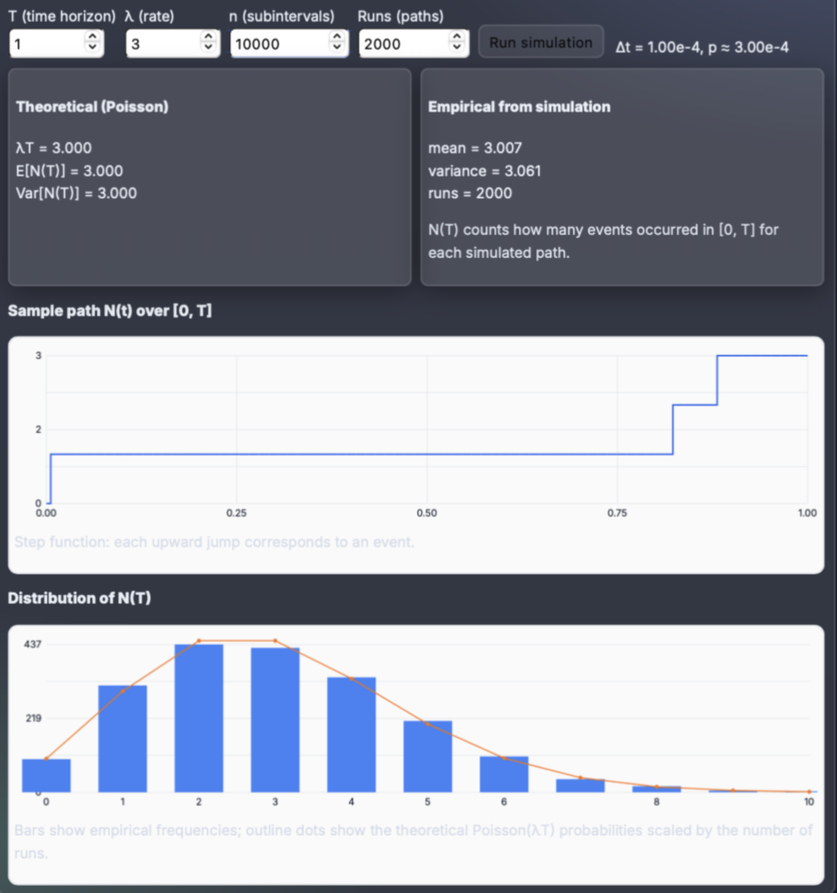

Probability Foundations & Poisson Counting Processes
Goal
In this homework I first recall the main interpretations of probability and their measure-theoretic foundations, and I derive some basic consequences of the axioms (subadditivity and inclusion–exclusion). Then I construct and simulate a counting process over a time interval using a fine Bernoulli approximation, and I show how this leads to the Poisson process with rate λ.
1) Interpretations of Probability & Axiomatic Resolution
1.1 Classical, Frequentist, Bayesian, Geometric
- Classical. For finitely many equally likely outcomes, P(A) = |A| / |Ω|. Works well for ideal dice/coins but assumes symmetry and finite Ω.
- Frequentist. Probability is the long-run relative frequency of an event in repeated i.i.d. trials: P(A) ≈ Kₙ(A)/n. Natural for repeatable experiments, less direct for unique events.
- Bayesian. Probability quantifies a degree of belief in a proposition given information. Priors are updated with data via Bayes’ theorem P(H|D) = P(D|H)P(H)/P(D).
- Geometric. On a continuum (segments, regions in ℝⁿ), probabilities are ratios of lengths/areas/volumes, implicitly using a measure (e.g. Lebesgue).
1.2 Axiomatic Interpretation (Kolmogorov)
Kolmogorov’s axioms do not choose a philosophical meaning for P(A); they only require that probabilities obey a consistent algebra on events. The starting point is a triple:
(Ω, 𝓕, P)
- Ω — sample space (all possible outcomes);
- 𝓕 — σ-algebra of events (measurable subsets of Ω);
- P — function 𝓕 → [0,1] satisfying the axioms.
The axioms are:
- Non-negativity: for all A ∈ 𝓕, P(A) ≥ 0.
- Normalization: P(Ω) = 1.
- Countable additivity: if (Aᵢ) is a sequence of pairwise disjoint events, then P(⋃ Aᵢ) = ∑ P(Aᵢ).
Classical, frequentist, Bayesian and geometric constructions are all valid as long as they produce some (Ω, 𝓕, P) satisfying these axioms. In this way the axiomatic approach reconciles different interpretations at the mathematical level: they become different models of the same abstract theory.
2) Probability as Measure Theory
2.1 σ-Algebras and Probability Measures
In measure theory, a σ-algebra 𝓕 on Ω is a collection of subsets closed under complements and countable unions:
- Ω ∈ 𝓕 and ∅ ∈ 𝓕;
- if A ∈ 𝓕 then Ac ∈ 𝓕;
- if A₁, A₂, … ∈ 𝓕 then ⋃ Aᵢ ∈ 𝓕 (and thus ⋂ Aᵢ ∈ 𝓕).
A measure μ on (Ω, 𝓕) is a function μ: 𝓕 → [0, ∞] such that μ(∅) = 0 and for disjoint Aᵢ, μ(⋃ Aᵢ) = ∑ μ(Aᵢ). A probability measure is simply a measure with total mass 1: μ(Ω) = 1. In probability we usually write μ = P.
2.2 Measurable Functions & Random Variables
A function X: Ω → ℝ is called measurable if for every Borel set B ⊆ ℝ, the preimage X⁻¹(B) = { ω ∈ Ω : X(ω) ∈ B } belongs to 𝓕. In probability, such measurable functions are precisely our random variables.
The distribution of X is the pushforward measure:
PX(B) = P(X ∈ B) = P(X⁻¹(B)).
Expectations and variances are defined as integrals relative to P; for example E[X] = ∫ X dP. This framework works for discrete, continuous and mixed distributions in a unified way.
3) Consequences of the Axioms: Subadditivity & Inclusion–Exclusion
3.1 Subadditivity
For any events A, B ∈ 𝓕 we have
P(A ∪ B) ≤ P(A) + P(B).
Proof sketch. Decompose: A ∪ B = (A ∩ Bc) ∪ B (disjoint union), so P(A ∪ B) = P(A ∩ Bc) + P(B). On the other hand A = (A ∩ Bc) ∪ (A ∩ B), so P(A) = P(A ∩ Bc) + P(A ∩ B) ≥ P(A ∩ Bc) because probabilities are non-negative. Combining the two identities gives P(A ∪ B) ≤ P(A) + P(B).
3.2 Inclusion–Exclusion (Two Events)
For two events we can refine the previous argument and obtain:
P(A ∪ B) = P(A) + P(B) − P(A ∩ B).
Indeed, from P(A) = P(A ∩ Bc) + P(A ∩ B) we get P(A ∩ Bc) = P(A) − P(A ∩ B). Substituting into P(A ∪ B) = P(A ∩ Bc) + P(B) yields the formula. Intuitively, when we add P(A) + P(B) we have counted P(A ∩ B) twice and we need to subtract it once.
4) Counting Processes & the Poisson Idea
A counting process {N(t), t ≥ 0} is a stochastic process that records how many events have occurred up to time t. Formally:
- N(0) = 0 and N(t) ∈ {0,1,2,…};
- N(t) is non-decreasing and has jumps of size 1 (each event increases the count by one);
- sample paths are right-continuous with left limits (cadlag);
- for s < t, the increment N(t) − N(s) counts events in (s, t].
The most important example is the Poisson process with rate λ > 0, denoted {N(t)}, characterized by:
- Independent increments: counts in disjoint time intervals are independent;
- Stationary increments: for t ≥ 0, h > 0, N(t+h) − N(t) ∼ Poisson(λh);
- Right-continuous step paths: N(t) jumps by +1 whenever an event occurs.
Intuitively, λ is the average rate of events per unit time: on average there are λ events in each interval of length 1, and λT events in an interval of length T.
5) Bernoulli Approximation on a Fine Time Grid
In this homework I construct a discrete approximation of a Poisson counting process on a fixed time interval [0, T] (e.g. T = 1). The idea is:
- Divide [0, T] into n subintervals of equal length Δt = T/n.
- In each small subinterval, generate an event independently with probability p = λΔt = λT/n.
- Let Xᵢ be the indicator of an event in subinterval i (Xᵢ = 1 if an event occurs, 0 otherwise). Define the counting process on the grid: Nₙ(kΔt) = ∑i=1..k Xᵢ.
For fixed T, the total number of events by time T is Nₙ(T) = ∑i=1..n Xᵢ, which has a Binomial(n, λT/n) distribution. As n → ∞, this converges in distribution to a Poisson(λT) random variable.
In other words, a Poisson process can be seen as the limit of Bernoulli “coin flips” on finer and finer time grids, with event probability proportional to the interval length.
5.1 Properties in the Limit
When Δt is very small:
- The chance of more than one event in a single subinterval is negligible;
- Events in disjoint subintervals are independent (by construction);
- The expected number of events in [0, T] is approximately λT.
Taking the limit n → ∞ yields the continuous-time Poisson process with rate λ: increments in any interval of length h are Poisson(λh), and increments over disjoint intervals are independent.
6) Interpretation of the Rate λ
The parameter λ plays several roles simultaneously:
- Average count per unit time: E[N(1)] = λ and E[N(T)] = λT.
- Intensity of events: larger λ means more frequent jumps of the counting process and steeper expected growth of N(t).
- Waiting times: the inter-arrival times between events are Exponential(λ); the expected waiting time is 1/λ.
- Limit parameter: in the Bernoulli approximation, λ appears in p = λΔt and in the limiting Poisson(λT) distribution.
In the simulation that follows, varying λ will change how often the counting process jumps over [0, T]: small λ produces rare, isolated events; large λ produces frequent, closely spaced jumps.
7) Interactive Simulation (JS)
Below I implement a simple JavaScript simulator for the Bernoulli approximation of a Poisson counting process. The user can choose the time horizon T, the rate λ, the number of subintervals n, and the number of repeated simulations. The tool visualizes:
- a sample path of the counting process N(t) over time (step function);
- the empirical distribution of N(T) across many runs, compared with the theoretical Poisson(λT) probabilities.
Below are the input controls, canvas elements, and JavaScript code that generate and display the simulations.
7.1 Simulation Controls
Theoretical (Poisson)
E[N(T)] = —
Var[N(T)] = —
Empirical from simulation
variance = —
runs = —
N(T) counts how many events occurred in [0, T] for each simulated path.
Sample path N(t) over [0, T]
Step function: each upward jump corresponds to an event.
Distribution of N(T)
Bars show empirical frequencies; outline dots show the theoretical Poisson(λT) probabilities scaled by the number of runs.
8) Experiments & Numerical Tests
To study how the parameters λ, T and n affect the simulated counting process, I performed six controlled experiments using the interactive simulator. For each experiment, I compared the simulated sample path, the empirical distribution of N(T), and the theoretical Poisson distribution with parameter λT.
Test A — Effect of the rate λ (with T = 1)
In this test I fixed the time horizon to T = 1, the grid resolution to n = 5000, and the number of runs to 1000. I then compared two different values of the rate λ.
A1 — λ = 1 (few expected events)
With λ = 1, the theoretical distribution is Poisson(1). The sample path shows very few jumps (typically 0–1 events), and the histogram of N(1) is concentrated around small values. The empirical mean (≈1.05) and variance (≈1.02) closely match the theoretical values.

A2 — λ = 5 (many expected events)
Increasing the rate to λ = 5 greatly increases the number of events. The theoretical distribution is now Poisson(5). The sample path contains several jumps, and the histogram shifts to the right accordingly. The empirical mean (≈4.96) and variance (≈4.64) again match the theory well.

These results confirm that the parameter λ controls the average frequency of events in the counting process. Higher λ produces more jumps in N(t) and shifts the distribution of N(1) to the right.
Test B — Effect of the time horizon T (with λ = 2)
For this test I fixed the rate to λ = 2 and varied the time horizon. This highlights how the key theoretical parameter is the product λT.
B1 — T = 0.5 (short interval)
Here λT = 1. There is little time for events to occur, and most sample paths contain 0 or 1 jump. The histogram mirrors a Poisson(1) distribution, and the empirical mean (≈1.04) and variance (≈0.99) agree with theory.

B2 — T = 3 (longer interval)
Now λT = 6. The sample path has many more jumps, and the histogram is centered around 6. The empirical mean (≈6.02) and variance (≈6.50) are close to the theoretical Poisson(6) predictions.

This confirms that N(T) depends primarily on the product λT: doubling the time horizon has the same effect as doubling the event rate.
Test C — Effect of the grid size n (discretization accuracy)
In this final test I fixed T = 1 and λ = 3, and increased the number of subintervals n. This isolates the effect of the Bernoulli-grid approximation.
C1 — n = 100 (coarse grid)
The time step is Δt = 0.01. The distribution of N(1) already has a Poisson(3)-like shape, though the histogram is somewhat jagged because the discretization is still relatively coarse.

C2 — n = 10000 (fine grid)
With Δt = 0.0001, the approximation is extremely fine. The histogram becomes smooth and nearly indistinguishable from the theoretical Poisson(3) curve. The sample path also shows more “micro-randomness” in the timing of jumps, consistent with a continuous-time Poisson process.

Increasing n improves the accuracy of the Bernoulli approximation without changing the underlying law of N(T), which remains Poisson(λT).
References
- Wikipedia — Poisson process
- Wikipedia — Counting process
- Wikipedia — Exponential distribution (inter-arrival times)
- Wikipedia — Poisson distribution
- Wikipedia — Measure theory
- Wikipedia — Kolmogorov probability axioms
- Wikipedia — σ-algebra
- Stanford Encyclopedia of Philosophy — Interpretations of probability
- UC Berkeley — Poisson distribution & process notes
- MIT — Probability and Measure (lecture notes)
- OpenStax — Poisson distribution (intro explanation)